Build intuition about 2D convolutions and filtering!
Finite Difference Operator
I use finite difference operations to show the partial derivative in x and y of the cameraman image by convolving the image with the operators. Then I compute the gradient magnitude image. Finally, I turn this into an edge image by picking the appropriate threshold from the gradient magnitude.
$$ D_x = \left[ 1 \ -1 \right], \quad D_y = \left[ \begin{array}{c} 1 \\ -1 \end{array} \right] $$
$$ C_x = \text{cameraman} * D_x, \quad C_y = \text{cameraman} * D_y $$
$$ G_m = \sqrt{{C_x}^2 + {C_y}^2}, \quad G_e =\begin{cases}
1 & \text{if } G_m > 0.2 \\
0 & \text{otherwise}
\end{cases} $$
$$ C_x $$$$ C_y $$$$ G_m $$$$ G_e $$
Derivative of Gaussian (DoG) Filter
We noted that the results with just the difference operator were rather noisy. Luckily, we have a smoothing operator
handy: the Gaussian filter G. Here, I create a blurred version of the original image by convolving with a Gaussian
(width=5 and SD=1) and repeat the procedure in the previous part.
$$ C_x $$$$ C_y $$
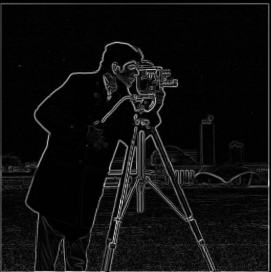
$$ G_m $$$$ G_e $$
Much less noisy! Derivatives are much stronger, which results in a clearer and thicker final edge detection.
Now we can do the same thing with a single convolution instead of two by creating a derivative of gaussian
filters.
$$ G_x = \frac{d}{dx} G, \quad G_y = \frac{d}{dy} G $$
$$ G_x $$$$ G_y $$
$$ C_x $$$$ C_y $$$$ G_m $$$$ G_e $$
They are the same! Except now we saved one operation...
Part 2: Fun with Frequencies!
Image "Sharpening"
Unsharp masking technique:
Use Gaussian as a low pass filter to blur image.
Extract high frequencies from an image by subtracting the blurred version from the original image.
Apply unsharp mask filter by adding $$ \alpha * high frequencies $$ to the original image.
The original agama compared to the blurred then sharpened agama does a decent job, but obviously has some
errors. With alpha=2, the edges look realistic but it's not sharpened enough – we lose a lot of the details on
the agama scales.
For alpha=5, we do a much better job of getting the details of the scales, but now there is more noise in the
image. For example, we are now hallucinating some colors. Around each scale, there is some orange hue that did
not exist in the original image. The borders are also no longer smooth like alpha=2.
Hybrid Images
Low FrequencyHigh FrequencyClose
Afar
Low FrequencyHigh FrequencyClose
Afar
Failure?
Low FrequencyHigh Frequency
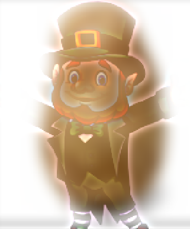
Close
Afar
The potato can be seen too much in the close up, whereas leprechaun's appears too shadowy. Better alignment will most likely fix this issue, specifically shrinking the potato to be behind the leprechaun.
Favorite!!!
Low FrequencyHigh Frequency
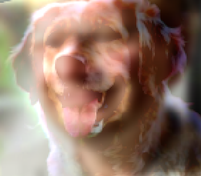
Close
Afar
Frequency Analysis
Log FFT(Efros) Log FFT(Dog)Log FFT(Low Frequency of Efros)Log FFT(High Frequency of Dog)Log FFT(Hybrid)
Bells & Whistles
Trying to use color to enhance the effect. I tried four experiments using my favorite set of images, Efros and the dog. I tried using (1) black and white for both frequency components, (2) color only low-frequency component (3) color only high-frequency component, and (4) both in color.
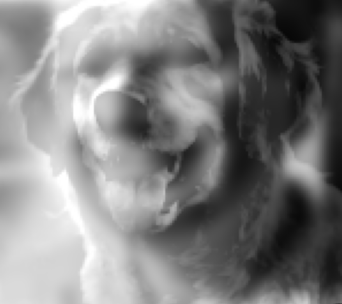
Both B/W
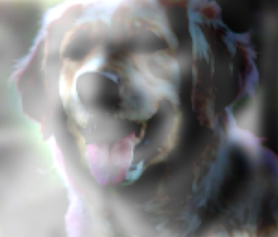
Low Frequency in Color
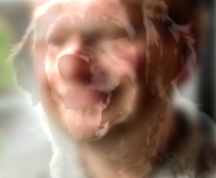
High Frequency in ColorBoth Color
Both B/WLow Freq. ColorHigh Freq. ColorBoth Color
I think all results look pretty good! I prefer the both color simply just because we can keep the color, so I generate the rest of the images above fully in color. It is interesting though, that in B/W we can hide the glow/shadowy effect that happens in the colored versions.
Gaussian and Laplacian Stacks
Algorithm for blending two different images:
Build Gaussian stack for both images: $$ G^A, G^B $$.
Build Laplacian stack for both images:
$$ L^A_i = G^A_i - G^A_{i+1}, \quad L^B = G^B_i - G^B_{i+1 }$$
Add the lowest frequency of the Gaussian stack to the end of both Laplacian stacks.
Build Gaussian stack for mask: m.
Build a combined Laplacian stack L such that: $$ L_k = L_k^A \cdot m_k + K_k^B \cdot (1 - m_k)$$
Collapse L to obtain the blended image.
Blending an apple with an orange!
AppleOrange
Apple Gaussian Stack
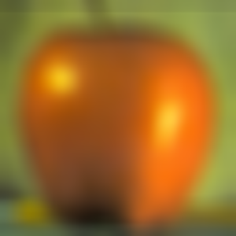
Apple Laplacian Stack
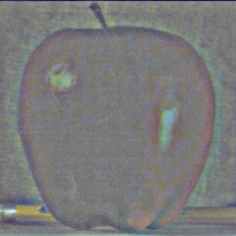
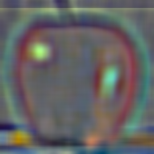
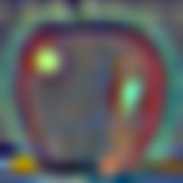
Orange Gaussian Stack
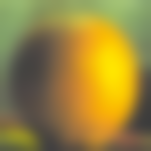
Orange Laplacian Stack
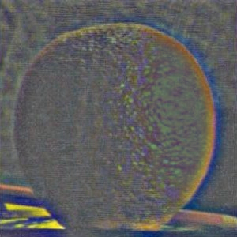
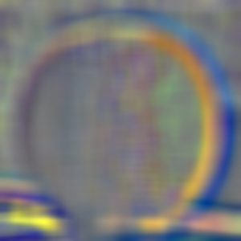
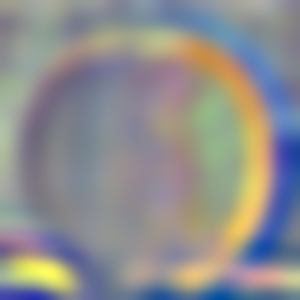
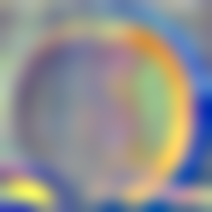
Recreation of Figure 3.42
Level 0
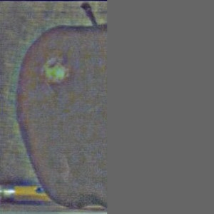
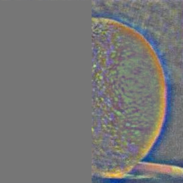
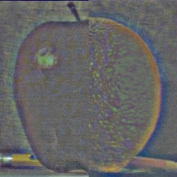
Level 2
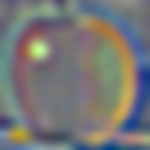
Level 4
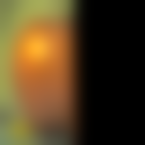
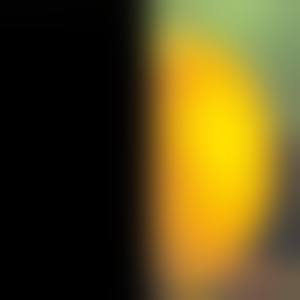
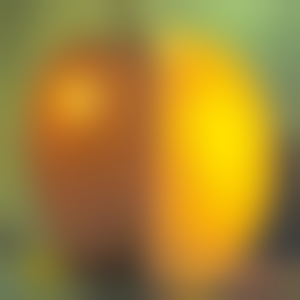
Collapsed
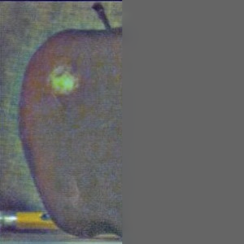
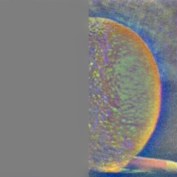
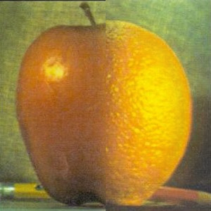
Multiresolution Blending
Example 1) Oraple!
OrangeApple
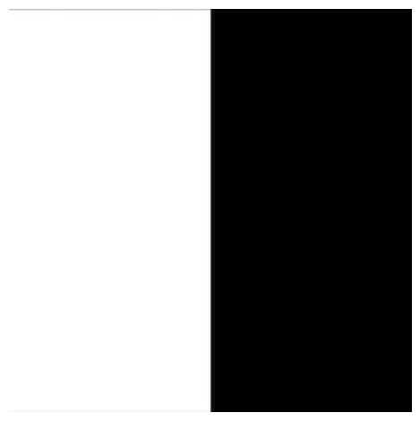
MaskOraple
Example 2) Tree with an eye! (irregular mask)
Tree
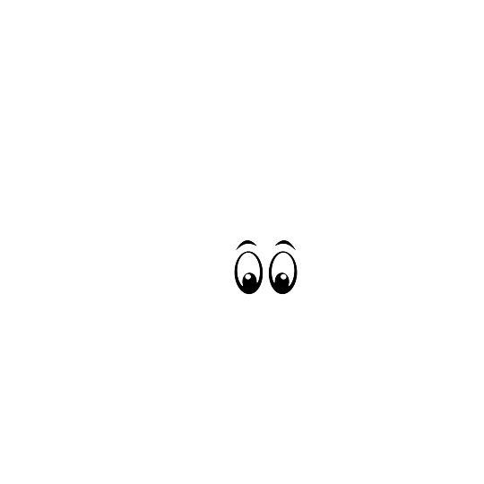
Eyes
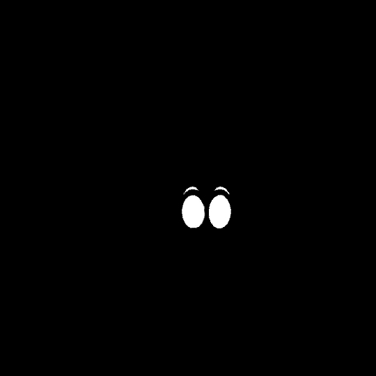
Mask
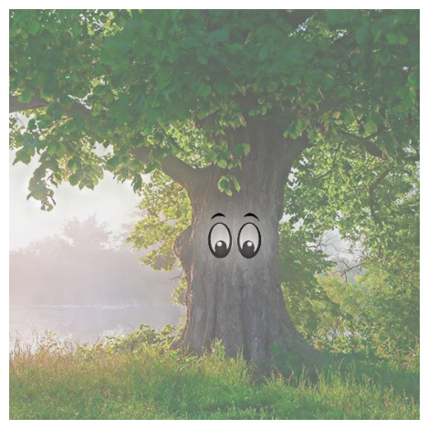
Oraple
Example 3) Shrek Mona Lisa! (irregular mask)
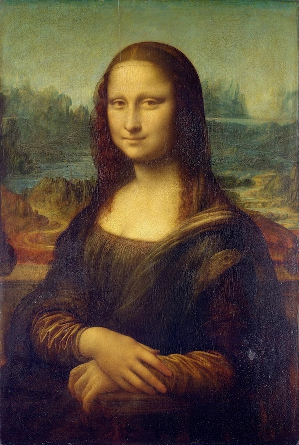
Mona Lisa
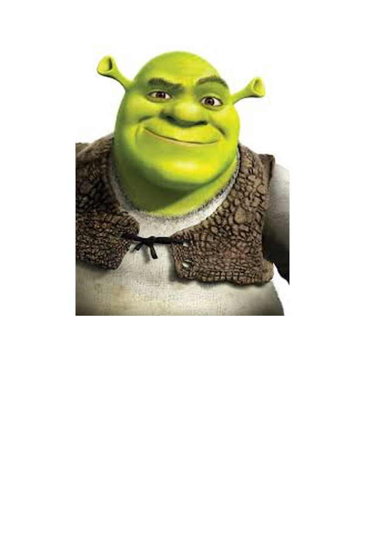
Shrek
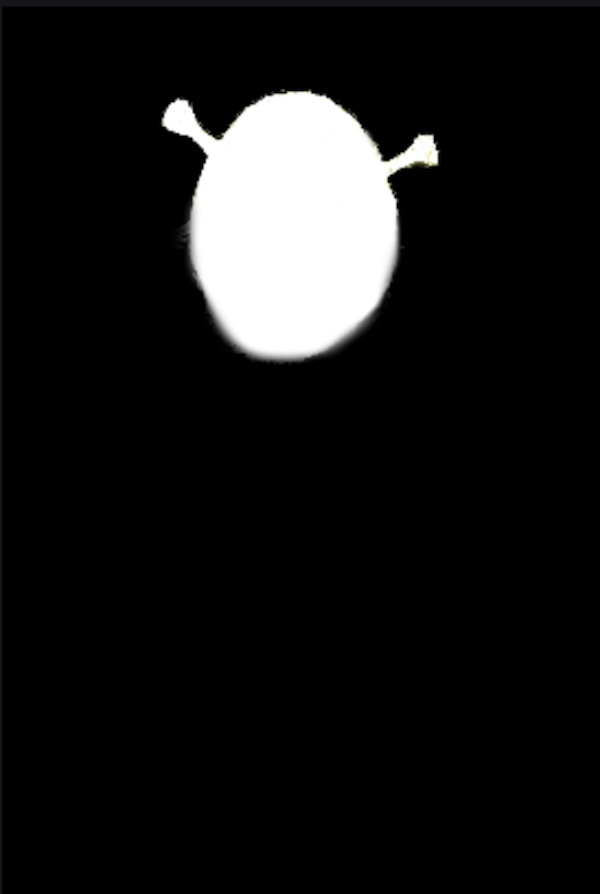
Mask
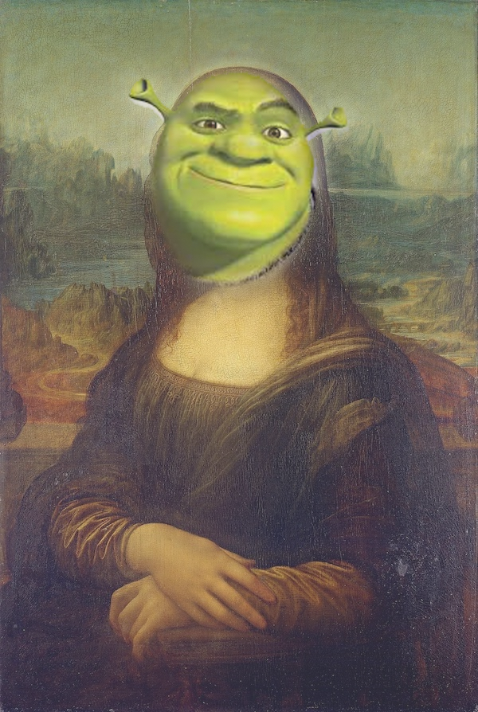
Oraple
Example 4) Is it day or night?! (favorite)
DayNightMaskDay or night?
This is my favorite result, and below are the Laplacian stacks generated during the blending process: (Fig. 10 recreation)
Level 0
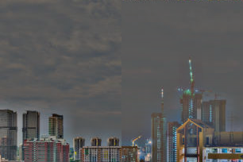
Level 2
Level 4
Collapsed
Bells & Whistles
Added color to everything!!
Reflection
I had a lot of fun with this project. The most important thing I learned was that you can do so much with image processing just by playing around with frequencies :) And that Gaussians are super useful in the CV space.